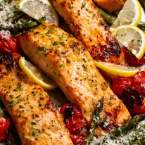

Lemon Garlic Salmon

Ingredients
- 6 oz salmon fillet
- 1 tsp lemon zest
- 2 tbsp extra virgin olive oil
- 1 tbsp dijon mustard
- 2 garlic cloves
- 1/2tsp cooking salt
- 1/4 tsp black pepper
- 1 lemon
- parmesan cheese
Optional Vegetables
- 3 bunches asparagus
- 7 oz cherry tomatoes
- 2 tbsp extra virgin olive oil
- 1/4 tbsp each salt and pepper
Preparation Instructions
- Mix the marinade ingredients in a small bowl. Slather onto top and sides of the salmon.Marinade for 1 hour.
- Preheat oven to 525f place oven shelf 8" from heat source.
- Toss asparagus and cherry tomatoes with olive oil,salt, and pepper. Spread out on large tray and clear space for the salmon.Place salmon on tray and spray with olive oil.
- cook for 11 minutes or until salmon is done
- Transfer salmon and vegetables to plate.Grate parmesan over vegetables.Squeeze lemon juice over the salmon, and sprinkle with parsley.
Home